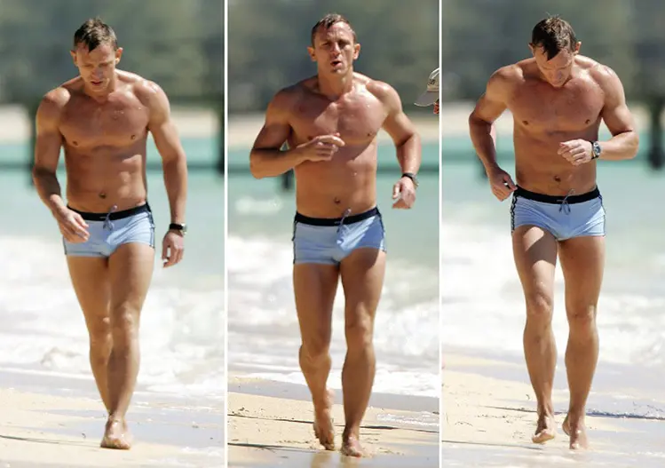

How to look like James Bond
Let's break down Daniel Craig’s physique from the first movie, Casino Royale.
Daniel Craig is 5’10’’
Probably around 10%-12% body fat. Not super shredded. Doesn't have a lot of veins, but you can clearly see muscle edges. Lean enough that his shoulders and chest look bigger. Holds a good amount of muscle. The allure of his physique, is that it looks attainable. And it is, with hard work.
The defining characteristic is low body fat, combined with a decent amount of muscle.
Important Note: Daniel Craig DOES NOT look like this all the time. Movie productions plan shirtless scenes out very carefully. Principal photography for Casino Royale commenced on 3 January 2006 and concluded on 20 July 2006. So that is half a year. Craig did not look ripped during all of filming. The goal is to hit peak physique when they film the shirtless scenes. This includes eating less carbs, to remove intra muscle water, then right before eatting a bunch of carbs and salt to fill your muscles with water. And on the set the day of, they are going to be doing workouts in between takes to make sure their muscles are full of blood and slightly inflammed to look bigger. This is called getting 'a pump'. So can you look like Bond? Yes. Will you look like that all the time? No and neither does Bond. With that being said, there are...
Two parts to getting a physique like Daniel Craig.
Remove fat. Add muscle.
Simplified Plan:
- Eat enough protein. Research shows that you need 0.82 grams of protein per pound of total body mass.
- Workout. 3-6 times a week. Hit every muscle group. Arms, chest, shoulders back, legs, abs etc. Track how many reps and set and the weight. Increase each time by a little. Can increase weight, or sets or reps. Example, if you are doing 3 sets of 5 reps at 45 pounds, the next time, try to do 4 sets, or 6 reps, or 50 pounds. By progressively overloading your muscles you will tell your body to grow muscle. Eating enough protein gives you the raw materials to build muscle. Look up any full body workout you like online and use it. This may seem like not enough info, but basically ANY workout plan, if you do it consistently and constantly use progressive overload will build muscle. One key is don't try to life too much too early. Focus on slowly lifting weight with good form, don't try to throw around massive amounts of weight fast. That is a good way to get injured.
- Sleep enough. 8 hours a day or more. Your body needs time to recover and build muscle.
- Eat in a caloric deficit until you are 10-12% body fat. How do you know you are eating in a caloric deficit? Track how many calories you are eating. Then weight yourself each day and then take the weekly average. Compare the weekly average against your past week average. If you are losing weight, since you are eating protein and working out and sleeping, we know you are losing fat. So keep going. If you are not losing weight, decrease your calories by a couple hundred (200-500) and then compare your weekly average weight after another week.
- Keep doing 1-4 long enough to look like James Bond.
The hard part about looking like an action hero, is not knowing what to do. It is doing it consistently when life gets in the way.
What happens when it is someones birthday? Do you eat the cake?
Holidays have special foods.
Being consistently in a caloric deficit is difficult.
If you want an estimate for how long it will take you to get to 10-12% body fat, you can use the Abs Calculator.